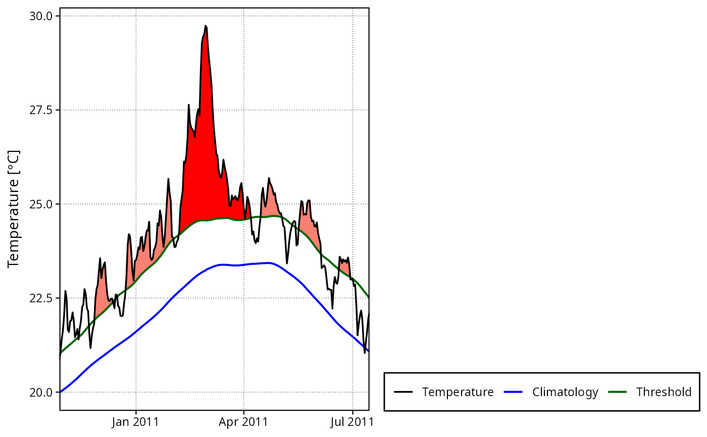
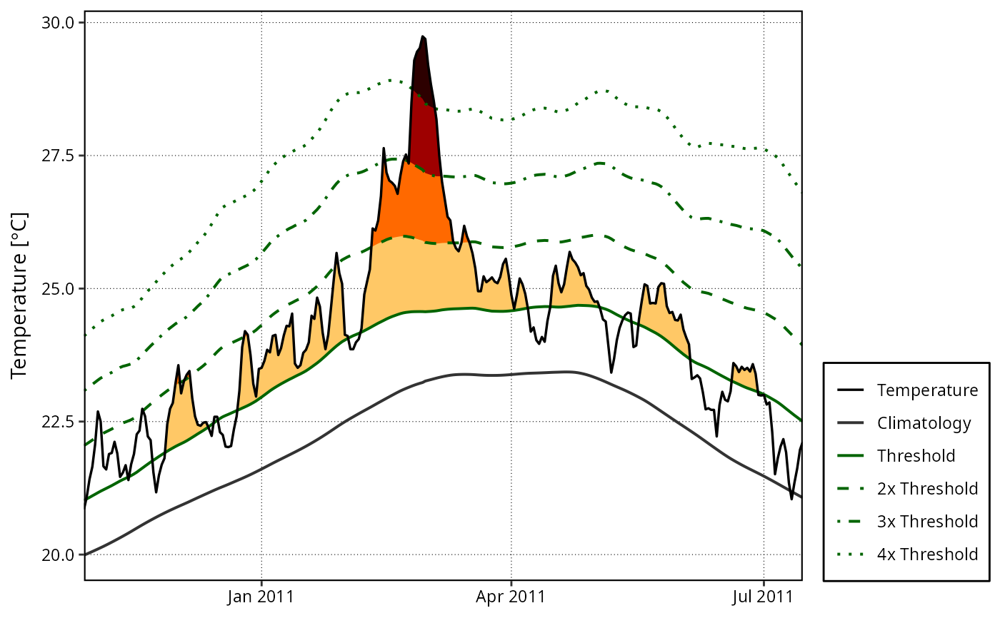

Creates a graph of warm or cold events as per the second row of Figure 3 in Hobday et al. (2016).
Usage
event_line(
data,
x = t,
y = temp,
metric = intensity_cumulative,
min_duration = 5,
spread = 150,
start_date = NULL,
end_date = NULL,
category = FALSE,
x_axis_title = NULL,
x_axis_text_angle = NULL,
y_axis_title = NULL,
y_axis_range = NULL,
line_colours = NULL
)Arguments
- data
The function receives the full (list) output from the
detect_eventfunction.- x
This column is expected to contain a vector of dates as per the specification of
make_whole_fast. If a column headedtis present in the dataframe, this argument may be omitted; otherwise, specify the name of the column with dates here. Note that this function will not work with hourly data.- y
This is a column containing the measurement variable. If the column name differs from the default (i.e.
temp), specify the name here.- metric
This tells the function how to choose the event that should be highlighted as the 'greatest' of the events in the chosen period. Partial name matching is currently not supported so please specify the metric name precisely. The default is
intensity_cumulative.- min_duration
The minimum duration (days) the event must be for it to qualify as a heatwave or cold-spell.
- spread
The number of days leading and trailing the largest event (as per
metric) detected within the time period specified bystart_dateandend_date. The default is 150 days.- start_date
The start date of a period of time within which the largest event (as per
metric) is retrieved and plotted. This may not necessarily correspond to the biggest event of the specified metric within the entire time series. To plot the largest event within the whole time series, make surestart_dateandend_datestraddle this event, or simply leave them both as NULL (default) andevent_linewill use the entire time series date range.- end_date
The end date of a period of time within which the largest event (as per
metric) is retrieved and plotted. Seestart_datefor additional information.- category
A boolean choice of TRUE or FALSE. If set to FALSE (default) event_line() will produce a figure as per the second row of Figure 3 in Hobday et al. (2016). If set to TRUE a figure showing the different categories of the MHWs in the chosen period, highlighted as seen in Figure 3 of Hobday et al. (in review), will be produced. If
category= TRUE,metricwill be ignored as a different colouring scheme is used.- x_axis_title
If one would like to add a title for the x-axis it may be provided here.
- x_axis_text_angle
If one would like to change the angle of the x-axis text, provide the angle here as a single numeric value.
- y_axis_title
Provide text here if one would like a title for the y-axis other than "Temperature °C" (default)
- y_axis_range
If one would like to control the y-axis range, provide the desired limits here as two numeric values (e.g. c(20, 30)).
- line_colours
Provide a vector of colours here for the line geoms on the plot. The default for the base plot is c("black", "blue", "darkgreen"), and for categories it is: c("black", "gray20", "darkgreen", "darkgreen", "darkgreen", "darkgreen"). Note that three (
category= FALSE) or six (category= TRUE) colours must be provided, with any colours in excess of the requirement being ignored.
Value
The function will return a line plot indicating the climatology,
threshold and temperature, with the hot or cold events that meet the
specifications of Hobday et al. (2016) shaded in as appropriate. The plotting
of hot or cold events depends on which option is specified in detect_event.
The top event detect during the selected time period will be visible in a
brighter colour. This function differs in use from geom_flame
in that it creates a stand alone figure. The benefit of this being
that one must not have any prior knowledge of ggplot2 to create the figure.
References
Hobday, A.J. et al. (2016), A hierarchical approach to defining marine heatwaves, Progress in Oceanography, 141, pp. 227-238, doi: 10.1016/j.pocean.2015.12.014
Examples
ts <- ts2clm(sst_WA, climatologyPeriod = c("1983-01-01", "2012-12-31"))
res <- detect_event(ts)
event_line(res, spread = 100, metric = duration,
start_date = "2010-12-01", end_date = "2011-06-30")

event_line(res, spread = 100, start_date = "2010-12-01",
end_date = "2011-06-30", category = TRUE)

event_line(res, spread = 100, start_date = "2010-12-01",
end_date = "2011-06-30", category = TRUE,
line_colours = c("black", "blue", "gray20", "gray20", "gray20", "gray20"))